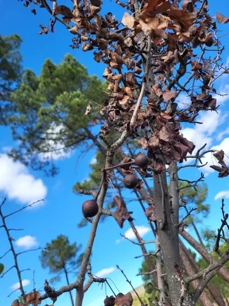

枝条从顶端开始干枯
干枯从枝条顶端往下走。整根侧枝死去、切口以内的枝还活着的，用枝枯那一条。

先看哪里
比较向风和背风面的新梢，查看顶芽是否发褐及下部枝条是否仍有活芽。
可能原因与下一步
霜冻、干风或枝梢感染都可能损伤顶部。记录近期天气；待活芽界限清晰后再决定修剪位置。
怎样区分相似问题
霜冻后，多条枝梢可能在相近高度枯死。若仅一处枝尖持续向下干枯，且有伤口或蛀孔，更像局部问题。
从迎风面到背风面检查几根枝。上一季已木质化的小枝是否完整，只有新长的软梢受损？回想变褐是在霜冻、干热风或搬离避风处后多久出现的。发生时间能帮助判断梢尖枯死的原因。
现在可以做什么
查看干枯段与活组织的交界，留意下方芽是否饱满，寻找破皮或虫屑，避免剥开健康树皮。
寒潮刚过，可等芽膨大后看清枝条活到了哪里。立即折掉所有褐色梢头，可能连伤叶下的活芽也一起折掉。若只有一根梢软垂，翻看背面有无折痕、裂口或蛀孔，再检查同枝其他位置。
接下来观察什么
生长期观察枯尖下方的芽能否正常萌发。如果干枯边界继续沿枝向下移动，连续拍照记录，再请人鉴定。
选受伤段下方一枚饱满的芽作参照。如果能展开并健康生长，可在适合该物种的季节剪掉确定枯死的部分。若周围的芽都在生长，这枚芽却也倒下，先拍下变化再动剪。
判断同一次寒潮是否影响了整批枝梢
拿同一株上朝外的梢与内侧受遮蔽的梢对照，再回忆枯梢出现前是否经历霜冻或干风。如果多个迎风梢同一天受害、内部芽随后正常萌发，可先记录天气事件。若每次都是从个别梢尖向下扩大，且与暴露方向无关，就要另查虫孔或枝皮病斑。